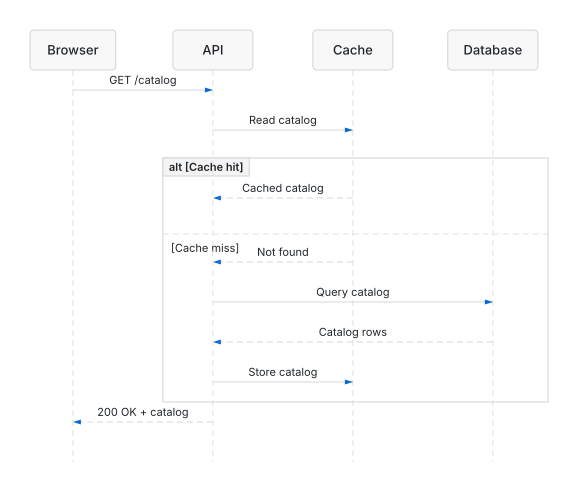
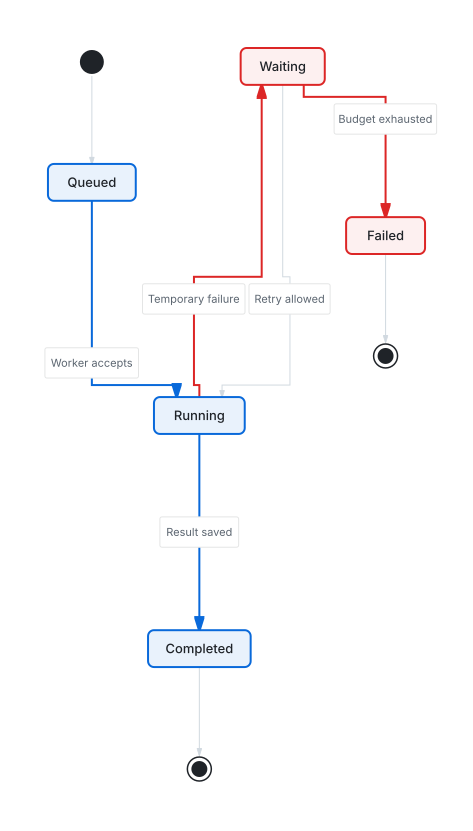
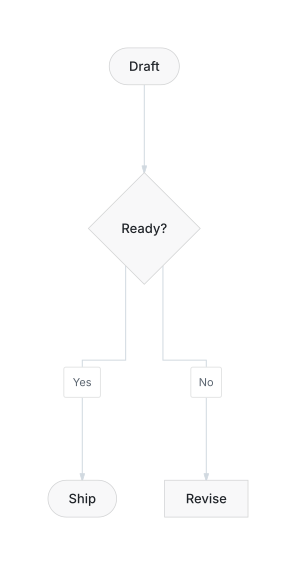
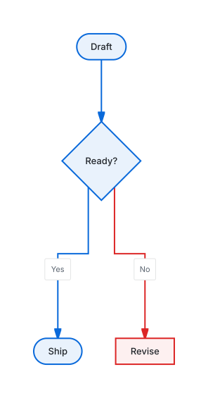

Diagrams worth sharing.
Turn Mermaid into clear architecture, workflows, and sequences. Your coding agent brings the ideas. Beautiflow handles the rendering and checks.
CLI + portable skill · Pi, Claude Code & Codex
{kind=link}

Order platform. Services, dependencies, and one clear boundary. Native Mermaid architecture rendering; no automatic polish.
{kind=link}

Cache hit or miss? Follow the request and the response. Sequence diagrams support rendering, not flowchart audit or polish.
{kind=link}

Retries without the guesswork. A clear completion path, with waiting and failure kept visible. Open full size to read every transition.
Same meaning.
Clearer priorities.
Make the happy path obvious without hiding the exception. Semantic emphasis changes the presentation, not the relationships.
{kind=link}

{kind=link}

Real outputs from one semantic action pass—not a simulated before/after or a layout-score claim. Read the Mermaid source, or open the visual test gallery for layout comparisons.
Install once.
Ask your agent.
A standalone runtime and a portable skill. No model keys in Beautiflow—your existing harness owns the conversation.
Install Beautiflow
Download the standalone CLI.
curl -fsSL https://beautiflow.cc/install.sh | bashAdd the agent skill
Give your harness the diagram workflow.
beautiflow install-skillOpen your harness
Ask for a diagram in Pi, Claude Code, or Codex.
Use Beautiflow to draw an order platform with an API, database, and background worker.
Prefer to inspect the script first? Read the installer. For harness-specific skill paths and manual installation, read the setup guide.
Agents supply judgment.
Beautiflow supplies control.
The CLI is built for agents. Deterministic operations stay separate from model judgment—and a successful render is only part of the check.
Keep the meaning
Mermaid holds the relationships. Sidecars hold layout overrides. Polishing never changes topology to make a diagram look better.
How layout state worksCheck, then change
A validated plan precedes each supported agent mutation. Receipts enforce verification, allow one named correction, and support rollback.
Read the agent protocolKnow the limits
Flowcharts and state diagrams support polish. Architecture supports rendering and audit. Specialized families use their own renderers.
See family support